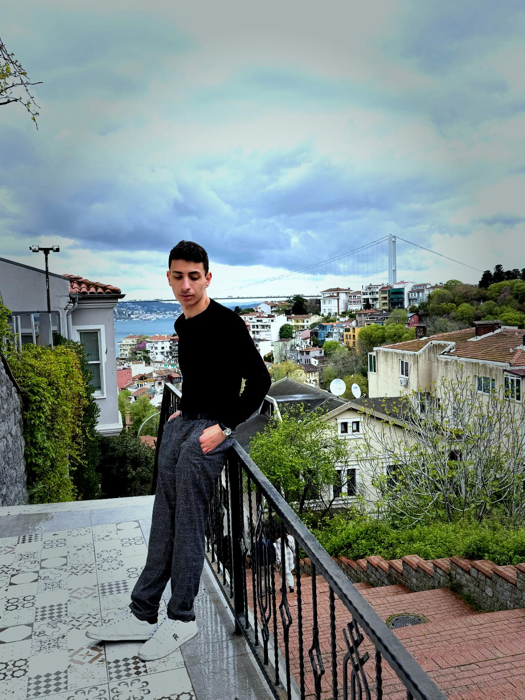

Samet Erez Atmaca — yazılım ve ürün geliştirici, İstanbul
Fikirleri ürüne çeviriyorum.
Yazılım, ürün tasarımı ve teknolojiyle gerçek problemleri çözmeye odaklanan kişisel çalışma alanım.

Üzerinde çalıştıklarım
Fikirden prototipe, prototipten ürüne. Her proje ayrı bir problem çözme alanı.
- DilekcoAvukatlar ve hukuk büroları için Türkçe hukuk çalışma alanı: resmî mevzuata dayanan dilekçe, araştırma ve sözleşme.Yayında
- NerioEtkinlikler, hikâyeler, anılar ve konuma dayalı şehir rotaları için sosyal deneyim.Geliştiriliyor
- Web siteleriKurumsal, kişisel ve özel web sitelerini tasarlıyor, geliştiriyor ve yayına hazırlıyorum.Hizmet
Hukuk çalışma alanı
Dilekco
Avukatlar ve hukuk büroları için dilekçe, araştırma ve sözleşme hazırlığını resmî mevzuata dayandıran; dava, müvekkil ve belgeleri tek yerde tutan çalışma alanı.
- Yanıtlarda ilgili mevzuat maddeleri kaynak olarak verilir (mevzuat.gov.tr)
- Dava, müvekkil, belge, takvim ve masraf takibi
- Büro ekibi için dosya atama, devir ve görev notu
- Claude ve ChatGPT için MCP bağlantısı
Sosyal deneyim, mobil ve web
Nerio
Yakınındaki etkinlikleri haritada bul, katıl, insanlarla tanış. Yaşadıkların hikâye ve anı olarak kalsın; şehri rotalarla keşfet.
- Konumuna göre etkinlik keşfi ve canlı harita
- Mekânlarda 24 saatlik hikâyeler
- Etkinlik sonrası fotoğraflar ve kişisel keşif haritası
- Yürüyüş, koşu ve bisiklet için şehir rotaları
Markaları dijitalde büyütüyorum
Kurumsal, kişisel ve özel web sitelerini tasarlıyor, geliştiriyor ve yayına hazırlıyorum. Hazır şablon yerine markaya göre tasarlanmış deneyimler.
Kurumsal web sitesi
Şirketin güvenilirliğini ve marka kimliğini yansıtan modern, responsive web siteleri.
Kişisel web sitesi
Portföy, CV ve kişisel marka için özel tasarım ve geliştirme.
Landing page
Ürün, hizmet ve kampanyalar için tek hedefe odaklanan sayfalar.
Özel web projeleri
İhtiyaca göre kurgulanan özel arayüzler, akışlar ve web tabanlı sistemler.
Teknolojiyi kullanmakla kalmayıp onunla yeni şeyler inşa etmek
Yazılım geliştirme, ürün fikirleri ve dijital deneyimler üzerine çalışıyorum. Öğrenirken aynı anda üretmeye, fikirleri gerçek projelere dönüştürmeye ve her projede daha iyi bir şey ortaya koymaya odaklanıyorum.
- Ürün düşüncesi
- Geliştirme
- Yaratıcı yön
İyi bir ürün, karmaşık olanı sade hissettirir.
Çalıştığım alanlar
Her araç bir amaç için. Gereksiz teknoloji kalabalığı yerine doğru çözüm.
- JavaScriptWeb ve etkileşim
- Node.jsBackend ve API
- PythonOtomasyon ve yapay zekâ
- MongoDBVeri ve backend
- FlutterMobil
- GitHubSürüm kontrolü ve açık kaynak
Bir fikrin varsa, konuşalım.
Yeni bir proje, fikir ya da sadece teknoloji üzerine konuşmak için yazabilirsin.
info@sameterezatmaca.com- erez.atmaca@hotmail.com
- GitHub: erezatmacaa-coder
- İstanbul, Türkiye